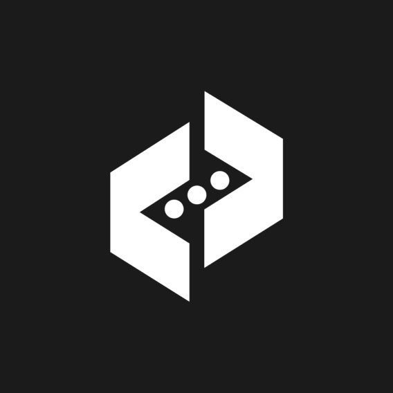

Дизайн логотипа
Этот проект включает в себя создание логотипа для компании. Я использовал минималистичный подход с яркими цветами и простыми формами, чтобы сделать логотип легко запоминающимся.
Этот проект включает в себя создание логотипа для компании. Я использовал минималистичный подход с яркими цветами и простыми формами, чтобы сделать логотип легко запоминающимся.
Создание постера для музыкального мероприятия, в котором использованы яркие цвета и динамичные графические элементы, чтобы привлечь внимание и передать атмосферу события.
Иллюстрация для детской книги, созданная с использованием ярких цветов и веселых персонажей. Этот проект был особенно интересен, так как требовал креативного подхода и внимательного отношения к деталям.
Дизайн веб-сайта для стартапа. Использование современного подхода в дизайне интерфейса, включая адаптивную верстку и интуитивно понятную навигацию.